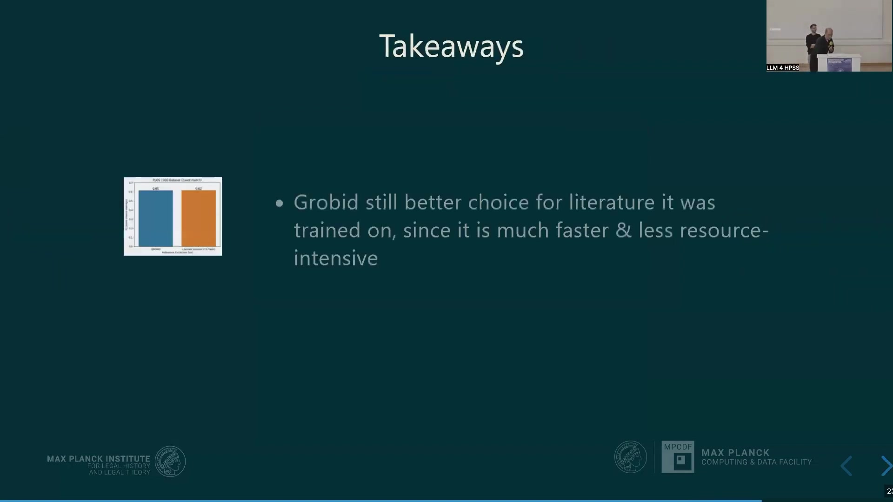

10 Large Language Models for Footnote Parsing in Law and Humanities Scholarship
Overview
Researchers investigate the complexities of parsing footnotes within law and humanities scholarship, a domain poorly served by conventional bibliometric databases. Their work addresses the critical need for accurate citation data to construct citation graphs. These graphs prove invaluable for tracing patterns in knowledge production, reconstructing influences, and measuring the reception of ideas in intellectual history. The project identifies significant deficiencies in existing data sources such as Web of Science, Scopus, and even OpenAlex, particularly concerning non-English, pre-digital, and non-“A-journal” publications. A primary challenge stems from the intricate nature of humanities footnotes—often termed “footnotes from hell”—which contain extensive commentary and messy, embedded references that traditional machine learning tools, such as those based on conditional random forests, struggle to process effectively.
To overcome these limitations, the research explores the potential of Large Language Models (LLMs) and Vision Language Models (VLMs) for reference extraction. Recognising the paramount importance of result trustworthiness, the team embarked on creating a high-quality gold standard dataset. This dataset comprises over 1,100 footnotes from 25 articles spanning various languages (French, German, Spanish, Italian, Portuguese) and a significant historical period (1958-2018), meticulously encoded in TEI XML. This standard facilitates interoperability, allows for contextual markup beyond simple reference management, and enables comparison with existing tools like Grobid.
Furthermore, the researchers developed Llamore, a lightweight Python package designed for reference extraction from text or PDFs using LLMs/VLMs. Llamore supports both open and closed models and provides an evaluation framework based on the F1 score, incorporating a sophisticated alignment process for comparing extracted references against gold standard data. Initial results demonstrate Llamore, using Gemini 2.0 Flash, significantly outperforms Grobid on their specialised humanities dataset. Nevertheless, Grobid remains competitive on datasets it was trained for, such as the PLOS 1000 biomedical dataset. Future work aims to expand the training data, enhance evaluation metrics, and add support for more nuanced citation analysis, including citation context and resolution of abbreviations like op cit.
10.1 The Imperative of Citation Graphs: Addressing Bibliometric Gaps in Social Sciences and Humanities

Researchers embark upon the challenge of parsing footnotes within law and humanities scholarship, a task with which current Large Language Models (LLMs) and other algorithms often struggle. Their primary objective involves generating the specific data required to construct comprehensive citation graphs. Such graphs offer powerful tools for intellectual historians, enabling the discovery of patterns and intricate relationships within the production of knowledge. Moreover, they facilitate the reconstruction of scholarly influences and allow for the measurement of how published ideas are received over time. An illustrative application involves tracking shifts in the most-cited authors, exemplified by an interactive web application analysing the Journal of Law and Society between 1994 and 2003.
An extremely poor coverage of historical Social Sciences and Humanities (SSH) material by established bibliometric datasources significantly impedes this research. Prominent databases like Web of Science, Scopus, and even the more accessible OpenAlex, prove largely inadequate for this domain, as they simply do not contain the requisite data. Compounding this issue, Web of Science and Scopus prove prohibitively expensive and operate under highly restrictive licences, creating dependencies undesirable for open scholarly inquiry. Whilst OpenAlex offers an open-access alternative, its coverage for the specialised content needed—particularly non-“A-journals,” pre-digital publications, and non-English language works—remains insufficient. For instance, data for the Zeitschrift für Rechtssoziologie, a German journal for law and society, reveals a stark lack of citation information prior to the 2000s in both Dimensions and OpenAlex.
Several factors contribute to this poor coverage. Primarily, commercial interest in humanities scholarship pales in comparison to that for STEM fields, medicine, and economics, which dominate these large bibliometric databases. Furthermore, these platforms typically prioritise the “impact factor” as a metric for science evaluation, a concern quite distinct from the nuanced inquiries of intellectual history.
10.2 The Intricacies of Humanities Footnotes: Limitations of Conventional Tools

Beyond database limitations, researchers identify the inherent complexity of humanities footnotes—aptly termed “footnotes from hell”—as a core challenge. These footnotes frequently feature extensive commentary and disordered data, all embedded within a significant amount of textual “noise,” as examples of German and English academic texts illustrate. Consequently, creating accurate training data for these intricate structures becomes an arduous task. Traditional annotation methods demand a laborious process of manually identifying and tagging various bibliographic elements, such as author, title, and publication date, often within specialised software interfaces.
Furthermore, existing tools, predominantly reliant on Conditional Random Forests and similar machine learning approaches, prove incapable of effectively handling such complex footnotes. Their performance significantly degrades when confronted with this type of data. For instance, performance metrics for the ExCite tool, detailed by Boulanger and Iurshina (2022), demonstrate variable extraction and segmentation accuracy across different training datasets, highlighting the difficulties with footnoted material. The challenges are multifaceted, encompassing varying citation styles, the complexities of multilingual terminology, and the pervasive use of ellipses, abbreviations (like idem or derselbe), and cross-references. Ambiguities, such as discerning whether an initial numeral signifies a volume or a page number, can perplex even human readers. Misleading capitalisation and the appearance of personal names within titles, which are then erroneously identified as authors, further complicate automated extraction. Language models may also struggle with specialised terminology with which they are unacquainted.
10.3 Large Language Models for Reference Extraction: The Imperative of Rigorous Evaluation

Scientists now explore Large Language Models (LLMs) as a promising avenue for tackling reference extraction. Early experiments conducted in 2022 with models like text-davinci-003 already indicated the considerable power of LLMs to extract references from disordered textual data. Newer models, including Vision Language Models (VLMs) capable of directly processing PDF documents, hold the promise of even greater efficacy. Researchers investigate various methods, such as prompt engineering, Retrieval Augmented Generation (RAG), and finetuning, to harness these capabilities.
Nevertheless, a critical question looms: can one trust the results generated by these models? The potential for error, exemplified by a widely reported incident of a lawyer misusing ChatGPT in federal court, underscores this concern. A guiding principle for the research, therefore, necessitates avoiding attempts to solve problems for which no validation data exists. This requires developing a robust testing and evaluation solution. Such a solution must rest upon three pillars:
a high-quality Gold Standard dataset
a flexible framework that can readily adapt to the fast-moving landscape of AI technology
solid testing and evaluation algorithms capable of producing comparable and reliable metrics
10.4 Crafting a High-Quality Gold Standard: A TEI XML Approach
Andreas Wagner detailed the team’s efforts to compile a high-quality dataset suitable for both training and evaluation, opting for TEI XML encoding. This choice, whilst perhaps less common in contemporary machine learning circles, stands as the preeminent standard within text-based humanities and digital editorics. Several compelling reasons underpin this decision. TEI XML provides a well-established, comprehensively specified standard for text interchange, surpassing the capabilities of purely bibliographical standards like CSL or BibTeX by covering a broader range of textual phenomena. Crucially, it extends beyond mere reference management to include citations, cross-references, and other forms of contextual markup, which can prove invaluable for tasks such as classifying citation intention. Furthermore, adopting TEI allows researchers to tap into a wealth of existing text collections and corpora from digital editorics projects, many of which publish their source data in this format, sometimes including detailed reference encodings.
Another significant advantage of TEI XML lies in the extensive tooling available. Grobid, a prominent tool for reference and information extraction, notably employs TEI XML for its training and evaluation processes. Utilising the same data format enables direct performance comparisons with Grobid, facilitates the sharing of training data with the Grobid team and others, and allows the project to leverage Grobid’s existing training resources.
The dataset currently under development draws from open-access journals. It involves the meticulous encoding of over 1,100 footnotes extracted from 25 articles, encompassing a diverse range of languages—French, German, Spanish, Italian, and Portuguese—and spanning a considerable period from 1958 to 2018. This collection anticipates yielding over 1,600 individual references; importantly, multiple references to the same work are encoded separately to capture the context of each occurrence. This endeavour remains a work in progress, having adapted its strategy midway to focus on Open Access journals and to incorporate PDFs alongside text, reference strings, and parsed TEI structures. Despite its strengths, TEI XML is no panacea; conceptual challenges, such as distinguishing pointers from references, and technical complexities, like handling constrained elements versus elliptic material, persist. These considerations lead to a fundamental question: how precisely should “performance” be defined and measured in this context?
10.5 Llamore: A Python Package for LLM-Driven Reference Extraction and Assessment

David Carreto Fidalgo introduced Llamore, an acronym for Large Language Models for Reference Extraction. Engineers developed this Python package to perform two primary functions: firstly, to extract citation data from raw input text or PDF documents utilising (multimodal) LLMs, and secondly, to evaluate the performance of this extraction process. Llamore processes textual or PDF inputs and outputs references formatted as TEI XML. When provided with gold standard references, it generates an F1 score as an evaluation metric.
Two principal objectives guided Llamore’s creation. It needed to be lightweight, containing fewer than 2000 lines of code and functioning as an interface to a user’s chosen model rather than embedding models itself. Concurrently, compatibility with both open and closed-source LLMs and VLMs formed a key design consideration. Users can install Llamore via pip. For extraction, one defines an extractor based on the desired model (e.g., GeminiExtractor, OpenAIExtractor). Notably, the OpenAIExtractor ensures broad compatibility with open model serving frameworks like Ollama and VLLM, which typically offer OpenAI-compatible API endpoints. The chosen extractor then processes a PDF or a raw text string, returning references that can be exported to an XML file in TEI biblStruct format. For evaluation, the F1 class is imported and used to compute a macro-average F1 score by comparing the extracted references against gold standard references; users can specify parameters like Levenshtein distance for matching.
The evaluation hinges on the F1 score, a well-established metric for structured data comparison, deriving from precision (matches divided by predicted elements) and recall (matches divided by gold elements). An F1 score of 1 signifies perfect extraction, whilst 0 indicates no matches. A crucial aspect of evaluation involves aligning the set of extracted references with the set of gold references. Llamore tackles this by formulating it as an Unbalanced Assignment Problem, employing a solver from the SciPy library. This process involves calculating F1 scores for every possible pairing of extracted and gold references, constructing a matrix of these scores, and then identifying the assignment that maximises the total F1 score under the constraint of unique pairings. This sophisticated alignment ensures accurate macro-averaging, with missing or hallucinated references appropriately penalised with an F1 score of zero. This alignment methodology strongly resembles recent work by Baka and colleagues.
10.6 Comparative Performance, Key Insights, and Future Directions

To assess Llamore’s efficacy, researchers conducted comparative performance evaluations. On the PLOS 1000 dataset, comprising 1000 PDFs from the biomedical domain, Llamore (utilising Gemini 2.0 Flash) achieved an F1 score (macro average, exact match) of 0.62, performing on par with Grobid’s score of 0.61. This result is notable given that Grobid was trained on portions of this type of biomedical literature. However, a stark contrast emerged during evaluation on the team’s custom humanities dataset. Here, Grobid’s F1 score plummeted to 0.14, indicating significant difficulty in extracting references. In contrast, Llamore achieved an F1 score of 0.45, demonstrating substantially better, indeed threefold improved, performance on this challenging, footnoted material.
These findings lead to several key takeaways. Grobid remains a preferable option for literature similar to its training data, primarily because it operates much faster and consumes fewer resources. Nevertheless, for the complex, footnoted literature characteristic of the humanities, experiments with Llamore paired with Gemini models reveal a significant performance advantage. One must note that these current performance metrics pertain to pure reference extraction and do not yet encompass more nuanced analyses such as citation context or cross-referencing.
Looking ahead, the team plans to expand their efforts by producing more training data and further refining test metrics. A significant focus will augment Llamore’s capabilities to support more sophisticated analyses. This includes identifying citations in their context (e.g., determining if a citation is approving or critical), resolving abbreviations like op cit., extracting specific pages cited, and accurately counting multiple citations to the same work.